Materi 1 dari 9
1. Arsitektur Komputer Von Neumann
Arsitektur Von Neumann adalah model dasar arsitektur komputer yang dirancang oleh John Von Neumann pada tahun 1945. Model ini menjadi dasar pembahasan komputer modern.
John von Neumann
Tokoh yang namanya digunakan pada model arsitektur ini.
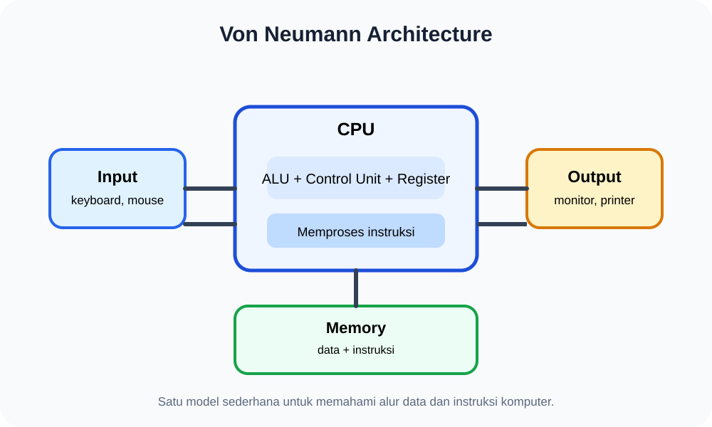
Von Neumann Architecture
Input → CPU ↔ Memory → Output.
Secara sederhana, komputer bekerja dengan menerima input, memproses data menggunakan CPU, menggunakan memori untuk menyimpan data dan instruksi, lalu menghasilkan output.
2. CPU — Pusat Pemrosesan Komputer
CPU atau Central Processing Unit sering disebut “otak” komputer karena bertugas menjalankan instruksi dari program.
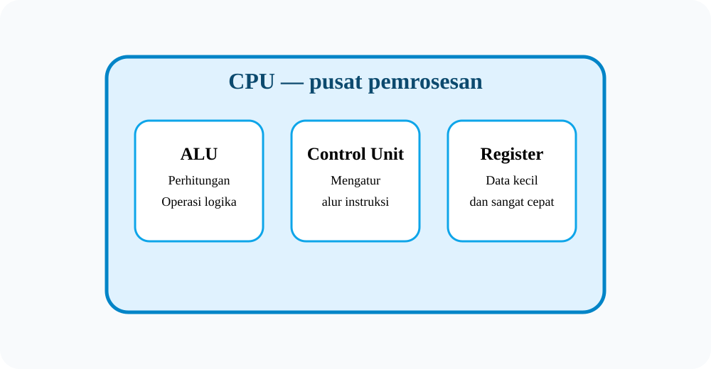
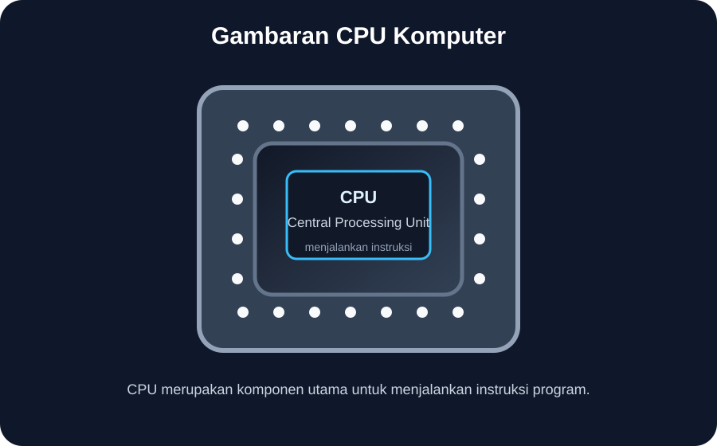
Contoh bentuk fisik CPU yang terpasang pada komputer.
Bagian penting CPU
3. Memori: RAM dan ROM
Memori digunakan untuk menyimpan data dan instruksi program. Dalam modul ini, dua jenis yang perlu dipahami adalah RAM dan ROM.
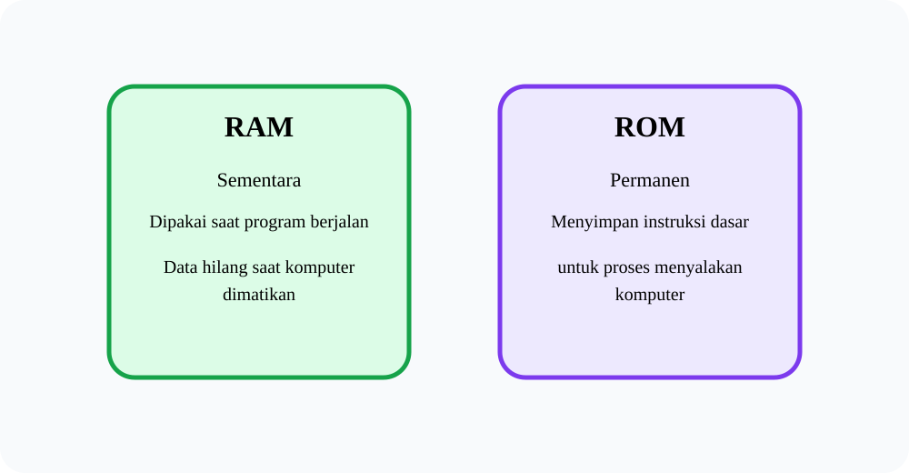
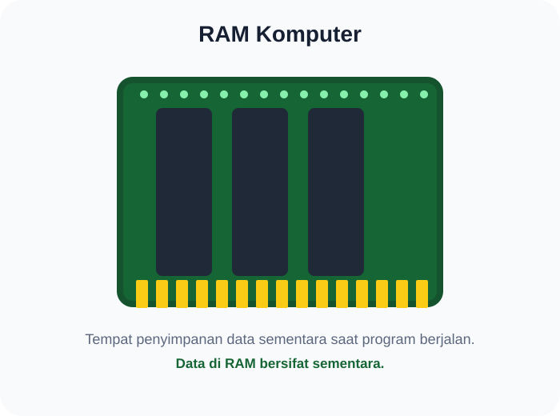
RAM
Menyimpan data sementara saat program berjalan.
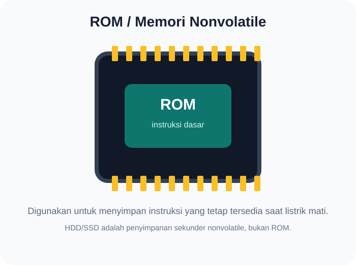
ROM
Menyimpan instruksi dasar yang bersifat nonvolatile.
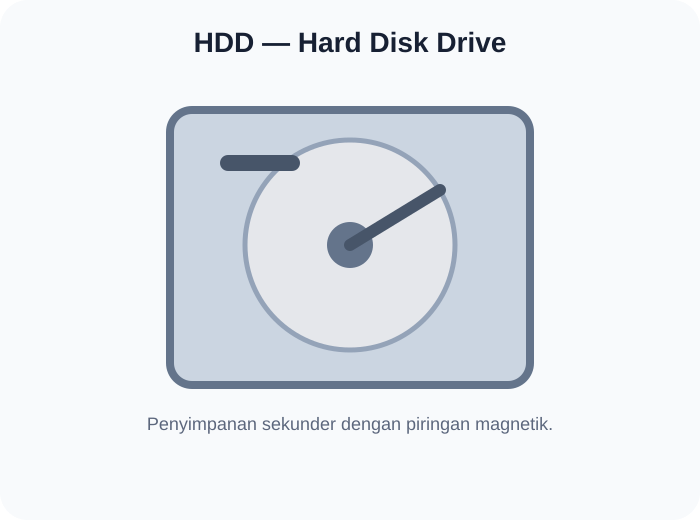
HDD
Contoh penyimpanan sekunder.
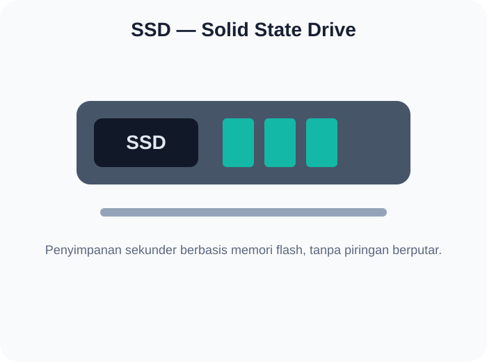
SSD
Contoh penyimpanan sekunder berbasis flash.
4. Perangkat Input dan Output
Input adalah cara komputer menerima data. Output adalah cara komputer menyampaikan hasil kepada pengguna.
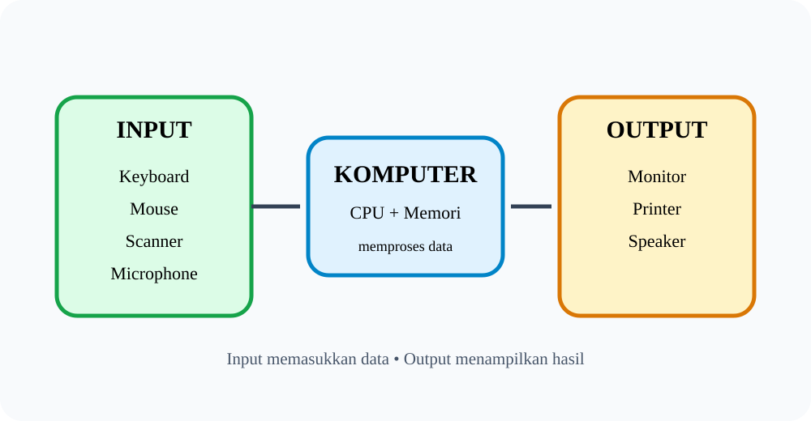
Perangkat Input
Contohnya keyboard, mouse, scanner, dan microphone. Perangkat tersebut digunakan untuk memasukkan data atau perintah.
Perangkat Output
Contohnya monitor, printer, dan speaker. Perangkat tersebut digunakan untuk menampilkan hasil pemrosesan.
5. Siklus Instruksi: Fetch → Decode → Execute
Siklus instruksi adalah proses yang dilakukan CPU untuk menjalankan satu instruksi program. Siklus ini terjadi berulang kali saat komputer menjalankan program.
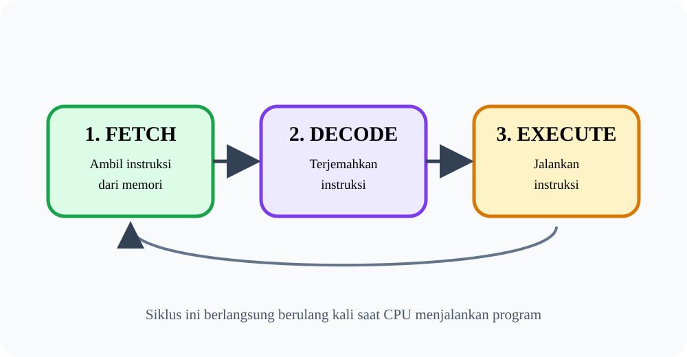
6. Sistem Operasi
Sistem operasi atau Operating System (OS) adalah perangkat lunak sistem yang mengelola sumber daya perangkat keras dan perangkat lunak serta menyediakan layanan bagi program aplikasi.
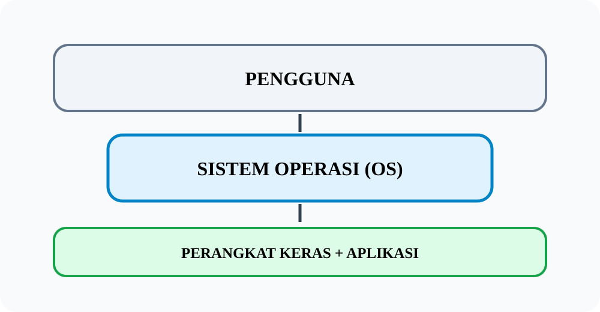
Contoh Sistem Operasi
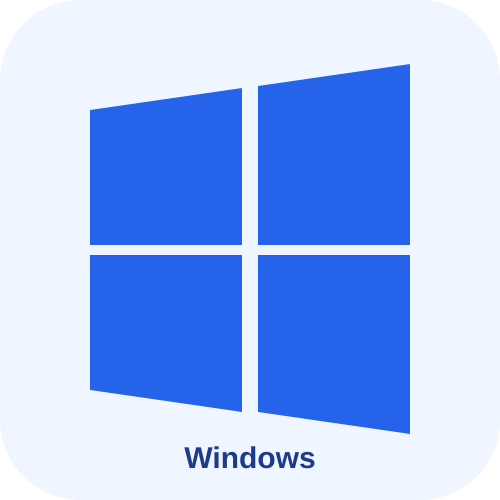
Windows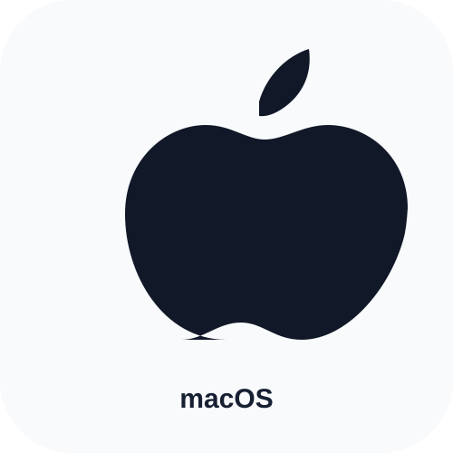
macOS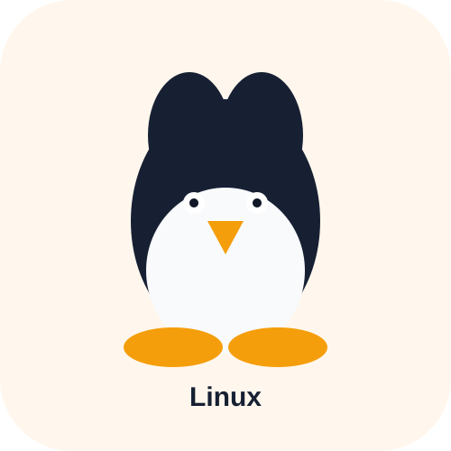
LinuxSistem operasi menjadi penghubung antara pengguna, aplikasi, dan perangkat keras. Contohnya adalah Windows, macOS, Linux, Android, dan iOS.
7. Fungsi Utama Sistem Operasi
Dalam modul, tiga fungsi utama yang menjadi fokus pembelajaran adalah manajemen memori, manajemen file, dan manajemen proses.
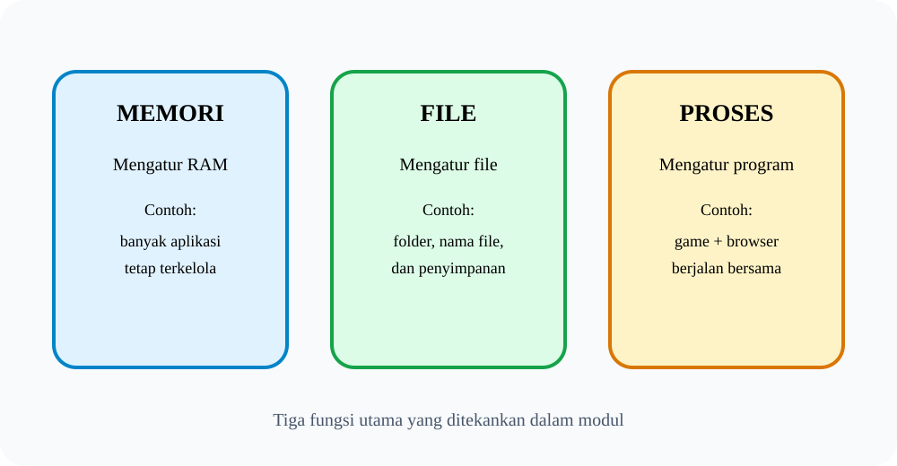
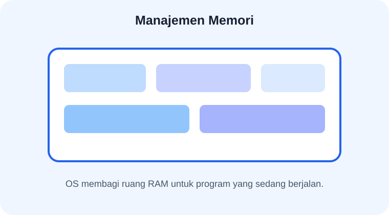
1. Manajemen Memori
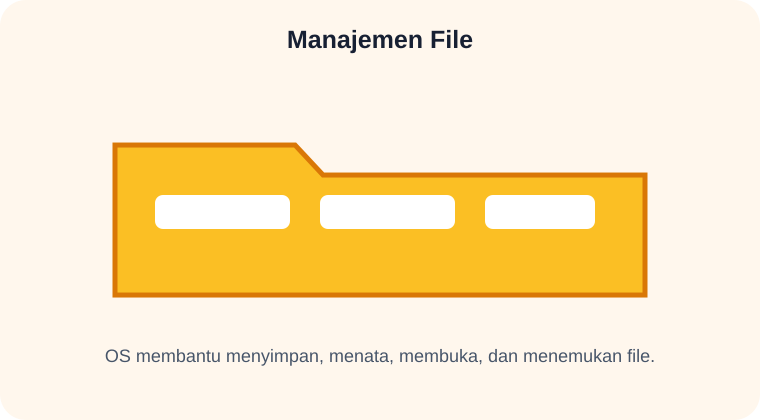
2. Manajemen File
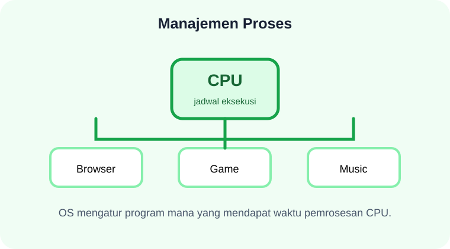
3. Manajemen Proses
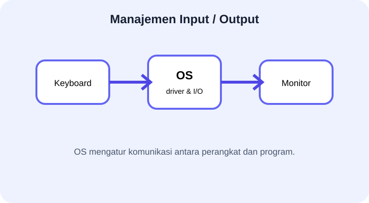
4. Manajemen Input/Output
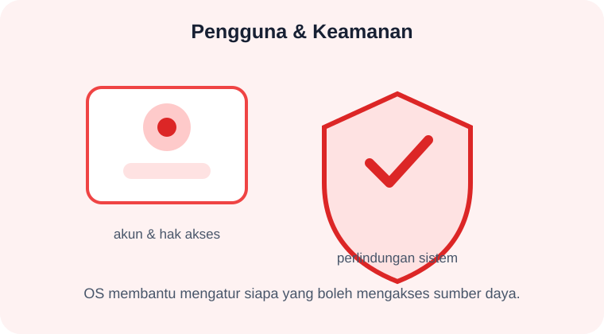
5. Pengguna & Keamanan
8. Hubungan Semua Komponen
Sekarang kita gabungkan semua konsep. Ketika kamu menggunakan komputer, banyak bagian bekerja bersama.
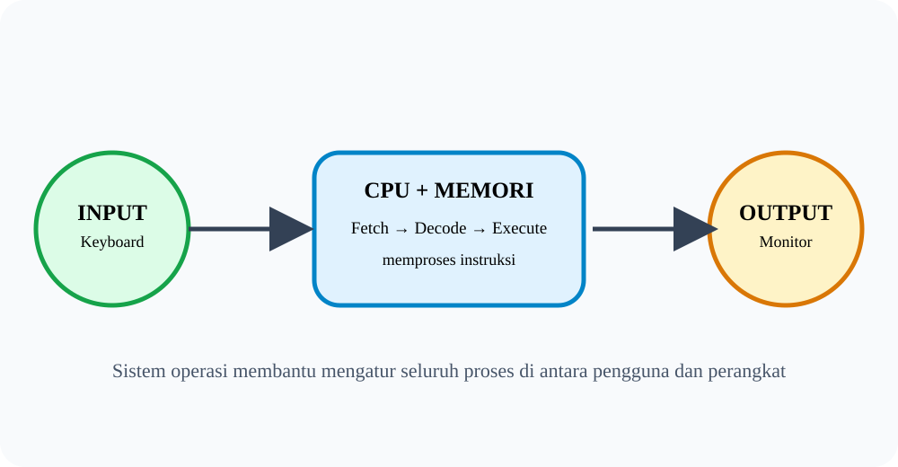
Misalnya saat mengetik di keyboard:
- Input: keyboard menerima ketikanmu.
- Proses: CPU menjalankan instruksi melalui siklus fetch, decode, dan execute.
- Memori: data dan instruksi yang diperlukan disimpan sementara di RAM.
- Output: monitor menampilkan hasil.
- Sistem Operasi: membantu mengatur proses, memori, file, serta perangkat input/output.
9. Ringkasan & Refleksi
Yang perlu kamu ingat
Refleksi untuk kamu
- Apa bagian komputer yang paling menarik menurutmu?
- Bagaimana data berpindah dari keyboard hingga tampil di monitor?
- Apa yang terjadi jika komputer tidak memiliki sistem operasi?
- Mengapa pemahaman tentang sistem operasi berguna dalam kehidupan sehari-hari?